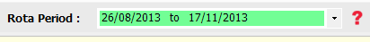

The rota period is defined by the start date and the number of rota weeks in the settings section.
On the main form there is a drop down box that lets you select the rota period you wish to view/edit.

By default future rota periods are shown in blue, and past rota periods are shown in red. The current rota period is always shown in green.